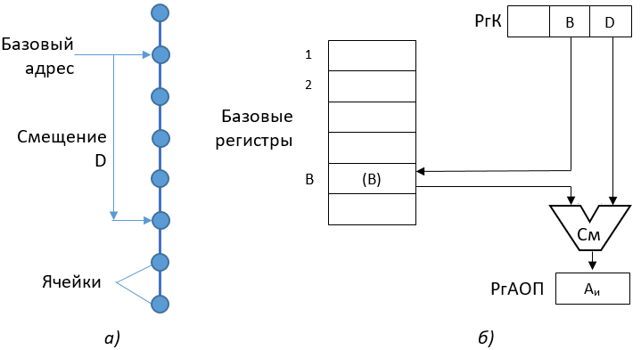
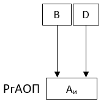
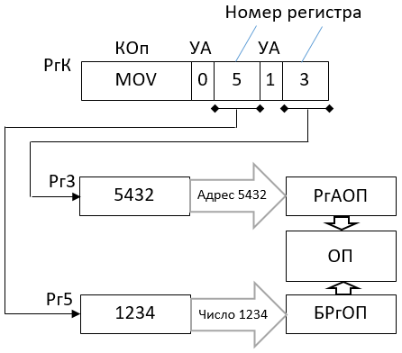
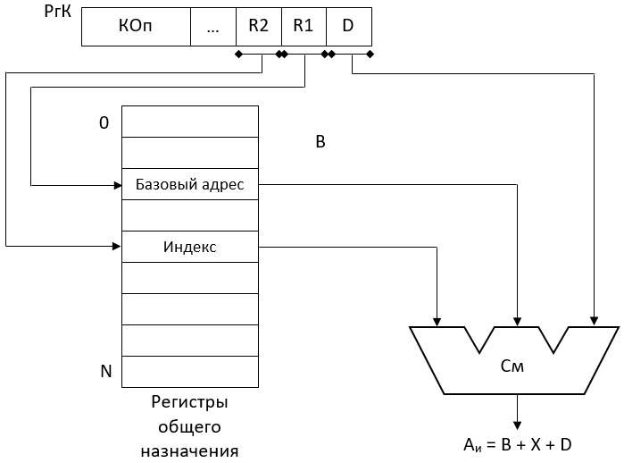
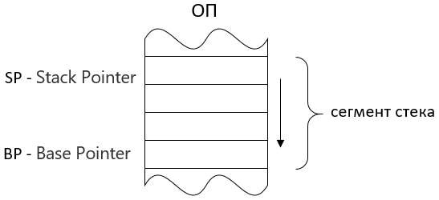
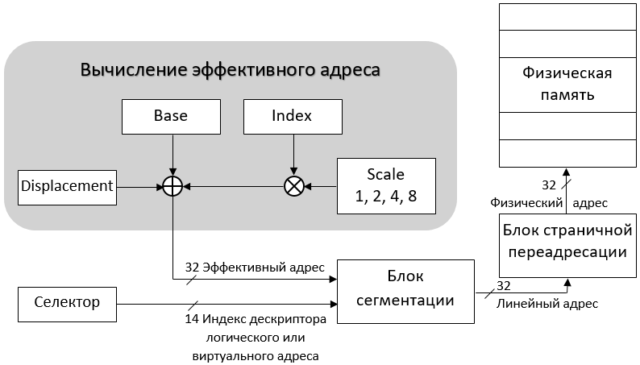

Изучение методов адресации команд и данных в компьютерах, принципов логической организации аппаратных средств процессора, обеспечивающих доступ к памяти.
Студенты должны внимательно прочитать информационную часть работы, ознакомиться с методами адресации данных в компьютерах, выяснить причины использования таких понятий, как подразумеваемый операнд и подразумеваемый адрес. Практическая часть выполняется в соответствии с вариантом задания из табл. 3.1.
Таблица 3.1 - Варианты заданий
Перейти в раздел "Схема адресации", ссылка на который приведена в конце информационной части методических указаний. Для трех заданных режимов адресации переписать выражения для вычисления линейного адреса, примеры команд и нарисовать соответствующие схемы формирования LA .
Перейти в раздел "Моделирование" и выполнить следующие процедуры:
(N_вар mod 6 + 1) * 16;
EA = (N_вар mod 5 + 1) * 14.
Значение базы, индекса, смещения: произвольные ненулевые, подбираются в соответствии с условиями, приведенными выше.
Отчет по работе должен содержать: цель работы, общие теоретические сведения об используемых в компьютерах способах адресации команд и данных, схемы формирования LA, результаты вычисления LA в табличном виде (табл. 3.2), выводы по работе.
Таблица 3.2 - Формирование линейного адреса
| Способ адресации | Размер сегмента | Начальный адрес сегмента | База | Индекс | Масштаб | Смещение | Линейный адрес |
|---|---|---|---|---|---|---|---|
|
Base index with offset and scaling
|
50
|
2
|
10
|
5
|
1
|
20
|
3710 = 25h
|
|
Base index with offset
|
50
|
2
|
10
|
5
|
20
|
3710 = 25h
|
|
|
Direct
|
50
|
2
|
35
|
3710 = 25h
|
Примечание: в том случае, когда в формуле формирования линейного адреса участвует параметр масштабирования (Scale) для каждого размера операнда необходимо получить дополнительные значения LA для значений параметра Масштаб 1, 2, 4 и 8.
В компьютерах, процессоры которых оснащены регистрами общего назначения, метод адресации объектов, которыми манипулирует команда, может задавать константу, регистр или ячейку памяти. Для обращения к ячейке памяти процессор должен, прежде всего, вычислить эффективный или исполнительный адрес памяти Аи, который определяется используемым в команде методом адресации. Исполнительный адрес – это номер ячейки памяти, к которой производится фактическое обращение.
При рассмотрении методов адресации следует выделить понятие подразумеваемого операнда и подразумеваемого адреса.
Понятие подразумеваемого операнда предполагает, что команда не содержит в явном виде адреса операнда; операнд подразумевается и фактически определяется кодом операции. Данный способ имеет несколько важных случаев применения. В качестве примера можно привести команды подсчета, в которых к некоторому числу, находящемуся в одном из регистров, прибавляется фиксированное приращение. В результате, один из операндов команды (номер регистра) адресуется явным методом, а второй операнд – приращение – не адресуется, в памяти компьютера не содержится и является подразумеваемым.
Понятие подразумеваемого адреса предполагает, что в команде не содержится явных указаний об адресе участвующего в операции операнда или адреса, по которому помещается результат операции. В то же время этот адрес подразумевается. Примером может служить команда, которая содержит адреса обоих операндов, участвующих в операции, при этом подразумевается, что результат операции будет помещен по адресу одного из операндов. Другим примером может служить команда, в которой указан адрес только одного операнда, а адрес второго, которым является содержимое специального регистра, подразумевается.
В таблице 3.3 на примере команды сложения (Add) приведены наиболее употребительные названия методов адресации операндов, которые реализованы в компьютерах общего назначения.
Таблица 3.3 – Основные методы адресации операндов
| Метод адресации | Пример команды | Описание команды | Использование |
|---|---|---|---|
| Непосредственная или литеральная |
Add R4, #3
|
R4 := R4 + 3
|
Для задания констант |
| Регистровая |
Add R4, R5
|
R4 := R4 + R5
|
Оба операнда и результат находятся в регистрах |
| Относительная или базовая |
Add R4, R1, D
|
R4 := R4+ M[R1+D]
|
Первый операнд – в регистре, второй в памяти |
| Абсолютная |
Add R1,(1000)
|
R1:=R1+ M[1000]
|
Применяется для обращения к статистическим данным |
| Косвенная регистровая |
Add R4,(R1)
|
R4 := R4+ M[R1]
|
Для обращения по указателю или вычисленному адресу |
| Индексная |
Add R3,(R1+R2)
|
R3 := R3 + M[R1+R2]
|
Применяется при работе с массивми: |
| Автоинкрементная |
Add R1,(R2)+
|
R1:= R1+M[R2];
R2 := R2+d |
Используется для прохода в цикле по массиву
с шагом. R2 – начало массива. В каждом цикле R2 получает приращение d |
| Автодекрементная |
Add R1,(R2)-
|
R1 := R1+M[R2];
R2 := R2-d |
Аналогична предыдущей. Обе могут использоваться для реализации стека |
| Безадресная | Безадресное задание операндов |
Обычно в компьютерах одновременно используется несколько типов адресации. В команде тип адресации может задаваться либо неявно кодом операции, либо в явной форме в специальном поле адресной части команды.
При непосредственной или литеральной адресации в команде содержится не адрес операнда, а сам операнд. При выполнении такой команды не требуется обращения к памяти для выборки операнда. Непосредственная адресация используется при выполнении арифметических операций, операций сравнения, а также для загрузки констант в регистры. Применение непосредственной адресации позволяет значительно уменьшить время выполнения программ, а также занимаемого ими объема памяти. Учитывая, что частота использования команд с непосредственной адресацией в различных программах колеблется от 17% до 43%, можно сделать вывод об эффективности такого метода адресации.
Применение прямой или регистровой адресации предполагает, что исполнительный адрес совпадает с адресной частью команды. Этот способ адресации был общепринятым в машинах первых поколений и продолжает применяться в современных компьютерах в комбинации с другими способами.
При относительной адресации исполнительный адрес определяется суммой базового адреса Аб и смещения D. Для хранения базовых адресов в процессорах предусмотрены специальные регистры. В примере, приведенном в таблице 3.3, для хранения базового адреса используется регистр R1. Кроме того, в адресной части команды выделяется поле, в котором размещается смещение D. Исполнительный адрес формируется:
Аи = Аб + D.

Рисунок 3.1 - Относительная адресация;
а) образование адреса элемента одномерного массива;
б) формирование исполнительного адреса
Применение в компьютерах относительной адресации позволяет при незначительной длине адресного кода команды обеспечить доступ к любой ячейке памяти. Количество разрядов регистра хранения базового адреса Аб выбирается таким, чтобы можно было задавать начало массива во всем адресном пространстве оперативной памяти, а адресный код смещения D определяет положение операнда относительно начала массива. Процесс формирования исполнительного адреса при относительной адресации показан на рисунке 3.1. В этом случае исполнительный адрес формируется на выходе сумматора согласно выражению:
Аи =[B]+D,
где B и D – коды адресной части, стоящие в соответствующих полях команды; [В]– содержимое регистра с номером В.
В том случае, если В = 0, исполнительный адрес равен D.
Формально обращение к памяти при относительной адресации можно представить в виде следующей последовательности процедур:
Формирование исполнительного адреса при относительной адресации путем суммирования связано с потерей времени. Поэтому иногда применяется процедура получения исполнительного адреса, получившая название операции конкатенации (совмещения) слова:
РгАОП := [РгВ]\РгК[D],
где \ - символ операции конкатенации.
На рисунке 3.2 показана процедура получения исполнительного адреса на основе операции конкатенации.

Рисунок 3.2 - Формирование исполнительного адреса
методом конкатенации
Учитывая, что относительная адресация для различных программ составляет от 32% до 55%, можно сделать вывод о том, что применение операции совмещения при относительной адресации позволяет повысить скорость формирования адреса одного из операндов и производительность процессора в целом.
Относительная адресация обеспечивает так называемую перемещаемость программ в памяти компьютера, т. е. размещение программ в свободных участках памяти без внесения изменений внутри самой программы.
При абсолютной адресации исполнительный адрес совпадает с адресной частью команды, т. е.
РгАОП := 1000; БРгОП := Ячейка ОП[1000].
Абсолютная адресация была общепринятой в первых вычислительных машинах и продолжает применяться в настоящее время в сочетании с другими методами.
При косвенной адресации адресное поле команды указывает адрес ячейки памяти, в которой находится адрес операнда или команды. Таким образом, косвенная адресация может быть определена как "адресация адреса". Наличие косвенной адресации в команде может определяться кодом операции. Кроме того, в некоторых машинах в команде отводится специальный разряд (указатель адресации - УА) и цифра 0 или 1 в нем указывает, является адресная часть команды прямым адресом или косвенным. Процедуру обращения к оперативной памяти за операндом при косвенной адресации можно описать таким образом:
В этом случае в регистр адреса оперативной памяти заносится содержимое поля R1 команды. Выполняется процедура считывания содержимого ячейки R1 и в буферном регистре ОП размещается один из операндов. Далее проверяется содержимое указателя адреса. Если УА равен 0 (прямая адресация), происходит переход к метке А, и в регистр АЛУ передается код операнда из буферного регистра оперативной памяти. Если же поле УА содержит 1 (косвенная адресация), то содержимое буферного регистра памяти загружается в адресный регистр памяти. Происходит повторное считывание из оперативной памяти (но из другой ячейки) операнда, который передается в регистр АЛУ.
На рисунке 3.3 показана логическая организацию устройств, выполняющих команду передачи числа 1234 из Рг5 в ячейку оперативной памяти 5432 с использованием косвенной адресации. Адрес ячейки находится в Рг3. При этом необходимо учитывать, что длина адресных полей команды достаточна лишь для размещения только номеров регистров, т.е. не позволяет задать в команде полный адрес ячейки памяти.

Рисунок 3.3 - Пример реализации косвенной адресации
Индексная адресация является развитием метода относительной адресации (базирования), с которым она часто используется совместно. Для выполнения индексации в машину вводятся специальные (индексные) регистры, в качестве которых используются ячейки сверхоперативной памяти. В формате команды выделяется поле Х для указания номера индексного регистра (в примере, приведенном в таблице 3.3, в качестве индексного используется регистр R2). Исполнительный адрес операнда при индексации формируется путем суммирования содержимого базового, индексного регистров и смещения D (рис. 3.4).

Рисунок 3.4 - Формирование исполнительного адреса при индексации
Автоинкрементная и автодекрементная адресации имеют механизм автоматического приращения или уменьшения содержимого определенного регистра при каждом обращении к нему. Такой тип адресации особенно эффективен при обработке массивов данных.
При автоинкрементной адресации сначала содержимое регистра используется как адрес операнда, а затем изменяется путем прибавления константы d, равной числу байт в элементе массива. При автодекрементной адресации сначала содержимое указанного в команде регистра уменьшается на число d, равное числу байт в элементе массива, а затем используется как адрес операнда.
Автоинкрементная и автодекрементная адресации представляют собой упрощенный вариант индексации и являются важным механизмом преобразования адресных частей команд при организации вычислительных циклов.
Безадресное задание операндов реализуется посредством стековой памяти, которая является эффективным элементом современной архитектуры компьютеров, начиная персональным компьютером и заканчивая мейнфреймом.
Стек представляет собой хранилище данных, работа с которым ведется по следующему принципу: элемент, записанный в стек последним, считывается из него первым. Применяются два вида реализации стековой памяти:

Рисунок 3.5 - Стековая память
Рассмотрим наиболее распространенную организацию стека, при которой он заполняется сверху вниз: первый элемент записывается в самый конец области стека (в ячейку с наибольшим адресом), следующий элемент записывается под ним и т. д. При чтении информации из стека первым извлекается последнее поступившее в него слово. Таким образом, получается, что низ стека всегда фиксирован (это последняя ячейка области стека), а вершина стека все время перемещается. Для задания текущего положения вершины стека используется регистр SP (Stack Pointer – указатель стека). В нем хранится адрес той ячейки, в которой находится элемент, записанный в стек последним. Область памяти, выделяемая под стек, называется сегментом стека. Начало сегмента стека указывается в сегментном регистре BP (Base Pointer). В указателе стека SP устанавливается смещение вершины стека, отсчитанное от начала сегмента стека. Поэтому абсолютный адрес вершины стека задается парой регистров BP и SP (рисунок 3.5).
В стеке автоматически реализуется правило "последний пришел – первый ушел", поэтому при операциях со стеком возможно безадресное задание операнда. Команда не содержит адреса ячейки стека, но должна содержать адрес ячейки памяти или регистра, откуда слово передается в стек или куда помещается из стека.
Вычисления с использованием стековой памяти основаны на так называемой бесскобочной записи арифметических выражений (иногда ее называют польской инверсионной записью - ПОЛИЗ). Пусть имеется некоторое выражение
|
(a + b)*(с + d):(e*(f - squ g)).
|
(3.1)
|
Запись этого выражения в ПОЛИЗ выполняется следующим образом: будем выписывать в строку, слева направо, операнды в том порядке, как они встречаются в данном выражении. Каждый раз, когда окажется, что операнды, необходимые для выполнения какой-либо операции из данного арифметического выражения, все уже выписаны, запишем знак этой операции; если далее окажется, что уже есть все операнды для следующей операции, запишем ее знак, если нет – будем продолжать выписывать по порядку следующие операнды. Если операндом для некоторой операции является результат какой-нибудь из предыдущих операций, то данный операнд считается имеющимся, если написан знак этой предыдущей операции. Преобразуя по этому правилу приведенное выше выражение, получим
|
ab + cd + * efg squ - *.
|
(3.2)
|
В полученной записи арифметического выражения порядок действий определен однозначно, хотя скобки в нем не используются. В стековой памяти последовательность символов в выражении ПОЛИЗ, например (3.2), может рассматриваться как программа вычисления исходного арифметического выражения (3.1). На рис. 3.6 приведена последовательность операндов и операций, записанных в стековую память, для вычисления выражения (3.1). При этом, в стек заносятся только адреса операндов, содержащиеся в ОП, и коды операций. Коды операций инициируют извлечение из стека одного или двух операндов, выполнение над ними указанной в команде операции и занесение результата в вершину стека.
|
Адрес a
|
|
Адрес b
|
|
+
|
|
Адрес c
|
|
Адрес d
|
|
+
|
|
*
|
|
Адрес e
|
|
Адрес f
|
|
Адрес g
|
|
Извлечение корня
|
|
-
|
|
*
|
|
:
|
Рисунок 3.6 - Программа загрузки стека для вычисления выражения 3.1
Безадресные команды с использованием стековой адресации значительно экономят память, сокращают формат команд и повышают производительность компьютеров. Однако безадресное задание операндов имеет ряд недостатков, самым существенным из которых является сложность выполнения команд передачи управления.
В архитектуре современных компьютеров стековая адресация широко используется при обработке подпрограмм и в системах прерываний.
Память для процессоров Intel разбивается на байты (8 бит), слова (16 бит), двойные слова (32 бит). Более крупными единицами являются страницы и сегменты. Память может логически организовываться в виде одного или множества сегментов переменной длины. Метод адресации данных в команде может устанавливать константу, регистр или ячейку памяти. Применительно к памяти различают три адресных пространства: логическое, линейное и физическое.
Логический или виртуальный адрес (рисунок 3.7) состоит из селектора и смещения. При обращении к ячейке памяти процессор сначала должны вычислить эффективный (исполнительный) адрес памяти, который задается данным в команде методом адресации. Эффективный адрес формируется суммированием (в различных сочетаниях) следующих компонентов:
Линейный адрес состоит из двух компонент: базового адреса сегмента и эффективного адреса.
В общем случае исполнительный адрес EA операнда определяется следующей формулой:
ЕА = Base + (Index*Scale) + Disp

Рисунок 3.7 - Формирование адреса 32-разрядных процессоров
В качестве примера в разделе "Схема адресации" рассмотрены методы адресации, используемые в процессоре 80386. При этом опущены два режима адресации: один обеспечивает обращение к содержимому какого-либо регистра процессора, другой задает операнд непосредственно в команде. Операнды могут иметь размер 8,16 или 32 бита.